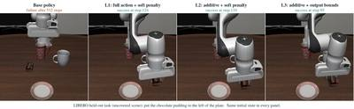
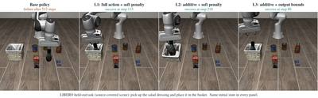
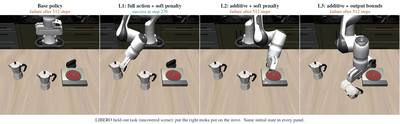
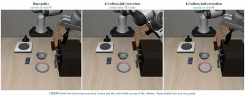
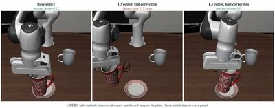
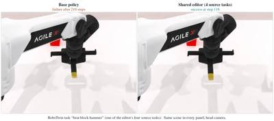

Finding 1
Transfer grows with source breadth, and source success does not predict it.
36.8%
of held-out episodes rescued by the bounded editor trained on 112 source tasks, against 0.5% with 2 source tasks.
Evidence for finding 1An empirical study in simulation
A Study of Generalizable Action Editing for Pretrained Robot Policies
Scroll sideways to see every panel.
All experiments are in simulation. Reported runs use one training seed unless noted; repeat evaluations and added seeds are in Does it hold up?
Finding 1
36.8%
of held-out episodes rescued by the bounded editor trained on 112 source tasks, against 0.5% with 2 source tasks.
Evidence for finding 1Finding 2
+31–42 points
gain of the three editors on the 9 held-out tasks with base success ≤ 7%; harm there is at most 2.0% of episodes.
Evidence for finding 2Finding 3
4.9%
of held-out episodes harmed by the bounded editor once its correction is halved at inference, from 9.2% at full correction.
Evidence for finding 3Finding 4
3.22 points
between the bounded editor and its own fixed source-mean correction (interval includes zero); the soft-penalty editors are 12.00–18.11 points above theirs.
Evidence for finding 4Setup in one screen
112 source tasks
The editor trains on these, all at once, with online RL: demonstrations, interaction and reward, with one critic ensemble per task and a shared actor.
18 editor-held-out tasks
Evaluated with the editor fixed: they supply no demonstrations, interaction or reward to any editor. They are not new to the base: the base policy's fine-tuning covered them.
Six recipes
A recipe is an editing choice (below) with a representation. L recipes learn a visual encoder online from the main and wrist cameras; R recipes read a fixed RL-token readout of the base model's features from the main camera. L1–L3 are trained on 112 source tasks, and all six, R1–R3 and L1–L3, on 16.
Recipes R1, L1
A = π(c)
The editor predicts the whole chunk. A penalty in the training objective pulls it toward the base's proposal.
Recipes R2, L2
A = B + Δ(c)
The editor predicts a correction that is added to the proposal B, with the same penalty. At zero output it reproduces the base.
Recipes R3, L3
A = B + Λ ⊙ r(c)
The correction is bounded per coordinate by a fixed scale Λ. There is no penalty: the bound alone limits how far the editor can move.
Each editor episode is paired with a base episode on the same task, initial state and pass (50 initial states × 2 passes per task; 1,800 pairs on the held-out tasks).
| Editor succeeds | Editor fails | |
|---|---|---|
| Base fails | Rescued | Still failed |
| Base succeeds | Kept | Harmed |
The four are shares of all paired episodes and sum to 100%. Editor success = rescued + kept. Base success = kept + harmed. Gain = rescued − harmed.
| Policy | Rescued | Kept | Harmed | Still failed | Editor SR | Base SR |
|---|---|---|---|---|---|---|
| L1 (Full action + soft penalty) | 40.4 | 17.1 | 6.2 | 36.2 | 57.56 | 23.33 |
| L2 (Additive + soft penalty) | 35.2 | 18.4 | 4.9 | 41.4 | 53.67 | 23.33 |
| L3 (Additive + output bounds) | 36.8 | 13.2 | 10.2 | 39.8 | 50.00 | 23.33 |
Finding 1
Transfer grows with source breadth, and source success does not predict it.
Under the bounded recipe, rescue is 0.5%, 15.8% and 36.8% of held-out episodes for editors trained on 2, 16 and 112 source tasks, and harm is 22.8%, 16.5% and 10.2%. The two-task editor reaches 93.50% on its own source tasks and 1.00% on the held-out tasks.
Across the six recipes trained on 16 source tasks, source success spans 56.88–93.00% and its order does not carry over. Five recipes reach 39.22–45.06% held-out success; the bounded encoder recipe L3 stays at 23.11%, the level of the base (23.83%), with a higher source success than every readout recipe. At 112 source tasks, source success differs by 1.17 points across the three recipes and held-out success by 7.56.
| Source tasks | Source SR | Held-out SR | Held-out base SR | Rescue | Harm |
|---|---|---|---|---|---|
| 2 | 93.50 | 1.00 | 23.33 | 0.5 | 22.8 |
| 16 | 85.63 | 23.11 | 23.83 | 15.8 | 16.5 |
| 112 | 93.55 | 50.00 | 23.33 | 36.8 | 10.2 |
| Recipe | Source SR | Held-out SR | Rescue | Harm |
|---|---|---|---|---|
| R1 (Full action + soft penalty; RL-token readout) | 61.75 | 40.28 | 26.4 | 10.0 |
| R2 (Additive + soft penalty; RL-token readout) | 77.00 | 41.06 | 27.6 | 10.3 |
| R3 (Additive + output bounds; RL-token readout) | 56.88 | 39.22 | 24.1 | 8.7 |
| L1 (Full action + soft penalty; online-learned encoder) | 93.00 | 40.28 | 24.9 | 8.4 |
| L2 (Additive + soft penalty; online-learned encoder) | 91.63 | 45.06 | 27.9 | 6.7 |
| L3 (Additive + output bounds; online-learned encoder) | 85.63 | 23.11 | 15.8 | 16.5 |
Scroll sideways to see every panel.
Scope. One training run per breadth level; the 16-task editor is paired with the base run of its own batch (23.83% against 23.33%). With 112 source tasks the mean visual distance from held-out contexts to the nearest source context is 0.159, against 0.326 with two; this distance is a proxy for context coverage, not a test of mechanism.
Finding 2
Gains concentrate where the base fails.
On the 9 held-out tasks with base success ≤ 7%, the three 112-task editors gain 31.3–41.9 points and harm at most 2.0% of episodes. On the 5 tasks with base success ≥ 50%, harm is 11.2–26.8%: L1 and L2 still gain 15.2 and 18.2 points, and L3 loses 2.2.
Success is higher than the base's on 16 of the 18 held-out tasks under L1 and L2, and on 12 under L3. Placing wine onto the cabinet, for example, goes from 55% to 22% under L1 and 24% under L3, and stays at 55% under L2.
| Task | Scene | Base | L1 | L2 | L3 |
|---|---|---|---|---|---|
| Butter into drawer; close | source-covered | 6 | 62 (+56) | 72 (+66) | 84 (+78) |
| Bowl onto plate | source-covered | 2 | 39 (+37) | 24 (+22) | 76 (+74) |
| Stack front bowl | source-covered | 7 | 20 (+13) | 18 (+11) | 6 (−1) |
| Right moka pot onto stove | uncovered | 1 | 61 (+60) | 27 (+26) | 1 (0) |
| Turn off stove | uncovered | 5 | 11 (+6) | 35 (+30) | 37 (+32) |
| Pan under shelf | source-covered | 0 | 89 (+89) | 85 (+85) | 82 (+82) |
| Pudding left of plate | uncovered | 56 | 98 (+42) | 94 (+38) | 72 (+16) |
| Pudding right of plate | uncovered | 76 | 84 (+8) | 90 (+14) | 56 (−20) |
| Red mug onto plate | uncovered | 52 | 98 (+46) | 90 (+38) | 68 (+16) |
| White mug onto plate | uncovered | 0 | 88 (+88) | 26 (+26) | 80 (+80) |
| Bowl from ramekin | source-covered | 50 | 63 (+13) | 51 (+1) | 58 (+8) |
| Bowl beside plate | source-covered | 21 | 37 (+16) | 45 (+24) | 19 (−2) |
| Salad dressing into basket | source-covered | 24 | 98 (+74) | 94 (+70) | 96 (+72) |
| Butter into basket | source-covered | 34 | 100 (+66) | 100 (+66) | 94 (+60) |
| Wine onto cabinet | source-covered | 55 | 22 (−33) | 55 (0) | 24 (−31) |
| Cream cheese into bowl | source-covered | 25 | 32 (+7) | 39 (+14) | 31 (+6) |
| Mug and pudding placement | uncovered | 4 | 34 (+30) | 20 (+16) | 16 (+12) |
| Both moka pots onto stove | uncovered | 2 | 0 (−2) | 1 (−1) | 0 (−2) |
| Base SR group | L1 | L2 | L3 |
|---|---|---|---|
| ≤ 7% (9 tasks) | +41.9 | +31.3 | +39.4 |
| 21–34% (4 tasks) | +40.8 | +43.5 | +34.0 |
| ≥ 50% (5 tasks) | +15.2 | +18.2 | −2.2 |
Scroll sideways to see every panel.
Scroll sideways to see every panel.
Scope. The groups were formed after evaluation. Harm is a share of all pairs and cannot exceed base success, so harm rises with base success partly by construction; comparisons between recipes within a group are not affected. The same grouping on 96 further tasks is under Does it hold up?
Finding 3
Harm follows correction size.
Harm is 4.9% (L2) and 6.2% (L1) of held-out episodes under soft penalties and 10.2% under output bounds (L3); between two runs of the base alone, 1.8–2.3% of pairs turn from success to failure. The bounded editor also makes the largest corrections: its mean executed arm correction norm is 0.150 in command units, against 0.075 for L1 and 0.074 for L2, and 69.8% of its recorded gripper commands are clipped to the native range.
Halving the correction at inference lowers harm under all three recipes. For L3, harm falls from 9.2% to 4.9% and success rises from 48.22% to 57.44%. Averaged over two batches, half scale changes held-out success by +4.39, +3.39 and +8.94 points for L1, L2 and L3.
The arm and the gripper respond differently. Halving only the arm correction of L3 raises success by 10.28 points; halving only its gripper correction lowers success by 10.28 points, and removing the gripper correction lowers success from 48.22% to 39.89%.
| Policy | Harm | Pairs | Base SR |
|---|---|---|---|
| L2 | 4.9 | 1,800 | 23.33 |
| L1 | 6.2 | 1,800 | 23.33 |
| L3 | 10.2 | 1,800 | 23.33 |
| L3, full correction | 9.2 | 900 | 23.56 |
| L3, half correction | 4.9 | 900 | 23.56 |
| Base, second run against first | 1.8–2.3 | 1,800 | 23.22–23.83 |
Scroll sideways to see every panel.
Scroll sideways to see every panel.
| Recipe and scale | First batch | Second batch |
|---|---|---|
| L1, α = 1.00 | 7.2 | 6.9 |
| L1, α = 0.75 | 5.0 | 6.2 |
| L1, α = 0.50 | 4.1 | 4.2 |
| L1, α = 0.25 | 4.3 | 4.3 |
| L2, α = 1.00 | 5.4 | 5.1 |
| L2, α = 0.75 | 4.3 | 4.0 |
| L2, α = 0.50 | 3.6 | 3.8 |
| L2, α = 0.25 | 4.0 | 3.6 |
| L3, α = 1.00 | 11.1 | 11.9 |
| L3, α = 0.75 | 7.1 | 8.1 |
| L3, α = 0.50 | 5.7 | 5.4 |
| L3, α = 0.25 | 5.2 | 5.7 |
| Recipe and scale | First batch | Second batch |
|---|---|---|
| L1, α = 1.00 | 57.56 | 56.67 |
| L1, α = 0.75 | 61.22 | 59.56 |
| L1, α = 0.50 | 61.89 | 61.11 |
| L1, α = 0.25 | 51.78 | 52.11 |
| L2, α = 1.00 | 54.11 | 53.56 |
| L2, α = 0.75 | 56.56 | 57.00 |
| L2, α = 0.50 | 57.22 | 57.22 |
| L2, α = 0.25 | 50.67 | 52.44 |
| L3, α = 1.00 | 49.22 | 49.44 |
| L3, α = 0.75 | 56.89 | 56.78 |
| L3, α = 0.50 | 58.22 | 58.33 |
| L3, α = 0.25 | 56.89 | 55.78 |
| Condition | SR (%) | Difference to full correction, points [95% CI] |
|---|---|---|
| Full correction | 48.06 | – |
| Arm halved | 58.33 | +10.28 [+5.56, +15.28] |
| Gripper halved | 37.78 | −10.28 [−14.72, −5.83] |
| Both halved | 56.11 | +8.06 [+3.06, +13.06] |
Scope. Scaling is a diagnostic at inference on the trained 112-task editors: no editor is retrained and no scale is selected on the held-out tasks. Each batch pairs with its own base run, so the harm of one condition differs by a few points between batches. The initial states of the two clips were selected because the bounded editor lost a base success there in the formal evaluation.
Finding 4
A fixed offset explains the bounded editor's transfer; soft-penalty editors depend on live context.
Replacing each editor's corrections by its own source-mean template, one fixed chunk of corrections averaged over that editor's source-task rollouts, lowers success by 18.11 points for L1 and 12.00 for L2. For the bounded L3 the difference is 3.22 points, with an interval that includes zero [−6.67, +0.22].
Freezing the editor's camera frames at the first decision lowers success under every recipe: by 12.44 points for L1, 16.11 for L2 and 10.67 for L3. Replacing only the editor's instruction changes success by at most 1.67 points. All three live editors stay 7.22–16.56 points above the base executed with its native eight-action chunk (41.22% on this pass).
The corrections themselves show the same split. Ten principal directions of source-task corrections capture 85.3% of held-out correction variance for L3, 76.1% for L2 and 68.8% for L1.
| Condition | SR (%) | 95% interval | Difference to live, points [95% CI] |
|---|---|---|---|
| L1, live editor | 57.78 | 55.44–60.11 | – |
| L1, own source-mean correction | 39.67 | 37.00–42.33 | −18.11 [−21.22, −14.78] |
| L1, editor frames frozen at step 0 | 45.33 | 42.78–47.89 | −12.44 [−15.67, −9.22] |
| L2, live editor | 53.56 | 51.00–56.11 | – |
| L2, own source-mean correction | 41.56 | 38.89–44.22 | −12.00 [−15.67, −8.56] |
| L2, editor frames frozen at step 0 | 37.44 | 34.89–39.89 | −16.11 [−19.34, −12.78] |
| L3, live editor | 48.44 | 45.89–50.89 | – |
| L3, own source-mean correction | 45.22 | 42.66–47.78 | −3.22 [−6.67, +0.22] |
| L3, editor frames frozen at step 0 | 37.78 | 35.33–40.33 | −10.67 [−14.11, −7.33] |
Scope. First-pass controls, 900 pairs per condition, base success 24.56%. Intervals resample initial states within tasks and do not include variation between training runs. The source-mean result is about the aggregate gain: frozen frames lower the bounded editor's success as well, and the clip shows one of its rescues that needs live vision.
Scroll sideways to see every panel.
| Recipe | Ten directions | Directions for 85% |
|---|---|---|
| L3 | 85.3 | 10 |
| L2 | 76.1 | 15 |
| L1 | 68.8 | 19 |
Repeat evaluations, added seeds, more tasks
The findings above come from one training run per recipe and task set. The paper's appendix repeats the evaluations, adds training seeds and widens the task set.
Between two runs of the base alone, 1.8–2.3% of pairs turn from success to failure. Against the base, the editors harm 4.8–5.7% (L2), 6.4–6.7% (L1) and 10.2–10.9% (L3) across six pairings of base and editor runs.
A second run of the same editor moves held-out success by 1.00, 0.89 and 0.33 points for L1, L2 and L3, and the recipes keep the order L1, L2, L3 in every combination of runs (smallest gap 2.56 points).
The simulation is not exactly repeatable: 220 of the 226 outcomes that change between base runs fall on four tasks, and the other 14 tasks repeat almost exactly.
| Comparison | Range over pairings |
|---|---|
| Base vs. base (three pairings) | 1.8–2.3 |
| L2 vs. base (six pairings) | 4.8–5.7 |
| L1 vs. base (six pairings) | 6.4–6.7 |
| L3 vs. base (six pairings) | 10.2–10.9 |
At 16 source tasks, held-out success is 20.00–27.44% over three L3 seeds and 39.67–47.33% over the six L1 and L2 seeds; L1 and L2 are within seed variation of each other.
At 112 source tasks, a second seed of each recipe was trained to 121.25k updates. L2 exceeds L3 in both seeds, by 10.56 and 23.89 points. The second seed of the bounded recipe is 13.44 points lower than the first at that point (35.00% against 48.44%), and remains above all three 16-task L3 seeds. L2 is ahead of L1 at that point in both seeds (by 10.94 and 6.44 points); at the end of training, which only the first seed reaches, L1 is ahead by 3.89 points.
| Recipe and seed | Held-out SR | Rescue | Harm | Source SR |
|---|---|---|---|---|
| L1, seed 0 | 40.72 | 24.9 | 7.7 | 93.00 |
| L1, seed 1 | 47.33 | 33.9 | 9.4 | 88.69 |
| L1, seed 2 | 39.67 | 22.2 | 5.4 | 92.13 |
| L2, seed 0 | 43.61 | 27.6 | 7.5 | 91.63 |
| L2, seed 1 | 44.39 | 28.8 | 7.3 | 89.31 |
| L2, seed 2 | 41.78 | 27.6 | 8.7 | 92.25 |
| L3, seed 0 | 24.00 | 16.2 | 15.7 | 85.63 |
| L3, seed 1 | 20.00 | 13.9 | 16.8 | 89.19 |
| L3, seed 2 | 27.44 | 19.2 | 14.7 | 86.31 |
| Recipe and seed | Updates (thousands) | Held-out SR |
|---|---|---|
| L1, first seed | 1.25 | 19.94 |
| L1, first seed | 51.25 | 52.00 |
| L1, first seed | 121.25 | 49.28 |
| L1, first seed | 240.00 | 52.44 |
| L1, first seed | 352.20 | 57.22 |
| L1, first seed | 481.25 | 57.56 |
| L1, second seed | 1.25 | 21.67 |
| L1, second seed | 51.25 | 56.72 |
| L1, second seed | 121.25 | 52.44 |
| L2, first seed | 1.25 | 8.17 |
| L2, first seed | 51.25 | 52.89 |
| L2, first seed | 121.54 | 59.83 |
| L2, first seed | 242.27 | 57.56 |
| L2, first seed | 351.81 | 58.67 |
| L2, first seed | 481.25 | 53.67 |
| L2, second seed | 1.25 | 17.39 |
| L2, second seed | 51.25 | 51.28 |
| L2, second seed | 121.25 | 58.89 |
| L3, first seed | 1.25 | 16.61 |
| L3, first seed | 51.25 | 44.22 |
| L3, first seed | 121.25 | 48.67 |
| L3, first seed | 241.25 | 50.89 |
| L3, first seed | 351.25 | 49.06 |
| L3, first seed | 481.25 | 50.00 |
| L3, second seed | 1.25 | 30.33 |
| L3, second seed | 51.25 | 36.22 |
| L3, second seed | 121.25 | 35.00 |
The 16-task editors were not trained on 96 further LIBERO tasks. There, L1 and L2 raise success from 19.15% to 40.94% and 40.71%, and L3 reaches 28.58%.
On the 9 tasks with base success ≥ 50%, L1 and L2 gain 6.67 and 6.67 points and L3 loses 20.89. Transfer is not positive everywhere: on the six LIBERO-Goal tasks, L1 and L3 lose 11.33 and 16.67 points.
These tasks are unseen by the editors, not by the base, and each editor is one training run.
| Base SR group | L1 | L2 | L3 |
|---|---|---|---|
| ≤ 10% (47 tasks) | +23.36 | +23.32 | +17.74 |
| 10–50% (40 tasks) | +23.35 | +22.85 | +6.50 |
| ≥ 50% (9 tasks) | +6.67 | +6.67 | −20.89 |
Single-task adaptation
It halves critic loss under every recipe and raises AUC only for the bounded recipe; source skills are lost without replay.
Each recipe starts from its 112-task editor or from fresh weights and adapts to one target task for 25k updates without source replay (two targets, three seeds per condition). Pretraining lowers mean online critic loss by 47–51% under every recipe, in 18 of 18 matched run pairs.
The area under the target success curve (AUC) is higher under pretraining for L3 (86.93 against 83.15); for L1 and L2 the two starts are level, with AUC differing by 0.13 and 0.28 points, and 22 of their 24 runs at 90% target success or above at 5k updates.
After adaptation, the pretrained L1 and L2 editors are at 22.71% and 24.58% success on 16 source tasks, and L3 at 5.42%; before adaptation all three are at 86.98–89.48%.
| Recipe | Fresh | Pretrained | Change |
|---|---|---|---|
| L1 | 3.391 | 1.676 | −50.6% |
| L2 | 3.050 | 1.631 | −46.5% |
| L3 | 5.476 | 2.784 | −49.2% |
| Recipe | Fresh | Pretrained | Difference (points) |
|---|---|---|---|
| L1 | 89.22 | 89.35 | +0.13 |
| L2 | 90.22 | 90.50 | +0.28 |
| L3 | 83.15 | 86.93 | +3.78 |
| Recipe | Before | After |
|---|---|---|
| L1 | 89.48 | 22.71 |
| L2 | 88.75 | 24.58 |
| L3 | 86.98 | 5.42 |
Scope. Two target tasks (bowl onto plate, wine onto cabinet), means over targets and seeds. Adaptation without replay overwrites source skills under every recipe.
Scope check on a second benchmark
A four-task editor improves its four source tasks and lowers success on twelve other tasks.
On RoboTwin, over a different frozen base (LingBot-VLA), one editor with full-action prediction, a soft penalty, an RL-token readout and expert routing is trained on four tasks. On 200 paired scenes per source task it reaches 84.13%, against 74.63% for the matched base (+9.50 points; rescue 15.0%, harm 5.5%). On 12 other tasks, without any update, success falls from 71.00% to 25.17% (−45.83 points; rescue 4.2%, harm 50.0%).
| Task | Base | Editor | Change (points) |
|---|---|---|---|
| Hanging mug (source) | 57.5 | 72.0 | +14.5 |
| Turn switch (source) | 60.5 | 74.5 | +14.0 |
| Beat block hammer (source) | 80.5 | 91.5 | +11.0 |
| Move playing card away (source) | 100.0 | 98.5 | −1.5 |
| Click alarmclock | 64.0 | 62.0 | −2.0 |
| Press stapler | 90.0 | 86.0 | −4.0 |
| Click bell | 66.0 | 60.0 | −6.0 |
| Stamp seal | 46.0 | 14.0 | −32.0 |
| Blocks ranking size | 62.0 | 18.0 | −44.0 |
| Move stapler pad | 70.0 | 20.0 | −50.0 |
| Blocks ranking rgb | 84.0 | 32.0 | −52.0 |
| Open microwave | 54.0 | 0.0 | −54.0 |
| Move can pot | 76.0 | 10.0 | −66.0 |
| Place can basket | 68.0 | 0.0 | −68.0 |
| Stack bowls three | 74.0 | 0.0 | −74.0 |
| Place dual shoes | 98.0 | 0.0 | −98.0 |
| Policy | Rescued | Kept | Harmed | Still failed | Editor SR | Base SR |
|---|---|---|---|---|---|---|
| Four source tasks | 15.0 | 69.1 | 5.5 | 10.4 | 84.13 | 74.63 |
| Other tasks, no editor update | 4.2 | 21.0 | 50.0 | 24.8 | 25.17 | 71.00 |
| Model and routing | SR (%) | 95% interval |
|---|---|---|
| With task-contrastive routing supervision: dynamic routing | 88.33 | 82.50–93.33 |
| With task-contrastive routing supervision: fixed task mean | 14.17 | 9.17–20.00 |
| With task-contrastive routing supervision: swapped task mean | 30.00 | 25.00–35.00 |
| With task-contrastive routing supervision: uniform mixture | 27.50 | 21.67–33.33 |
| Baseline run without routing supervision: dynamic routing | 85.00 | 78.33–90.83 |
| Baseline run without routing supervision: fixed task mean | 52.50 | 44.17–60.83 |
| Baseline run without routing supervision: swapped task mean | 36.67 | 29.17–44.17 |
| Baseline run without routing supervision: uniform mixture | 30.83 | 23.33–38.33 |
Training system
ReSOP builds on RLinf and SOP. Collectors run the simulators, query the frozen base and execute edited chunks. A learner holds the shared actor and, for every task, a critic ensemble with its target network and optimizer state. Replay is kept per task, and every update draws the same number of rows from each selected task.
Scope. These are measurements of this system. The study does not compare ReSOP with other training systems, and no whole training run has been timed with the engineering changes examined afterwards.
167 GPU-hours
to train the bounded 112-task editor: 481,250 actor updates and 12.1M actions in 41.8 hours on four GPUs.
Scope: the run behind the results, including work repeated after two restarts. A second seed takes 39.52 GPU-hours to 121.25k updates, against 39.29 for the first run over the same range.
1.06× sampling ratio
between the most and the least sampled task in replay, while interaction differs by 7.07× (38,221 to 270,227 physical actions per task).
Scope: logs of the 112-task training run.
79% fewer render calls
Cameras render only at chunk boundaries and episode ends; stepping goes from 46.2 to 64.0 actions/s with matching simulator states, rewards and boundary images.
Scope: a two-task replay of recorded commands; environment stepping only.
22.7 MB snapshot
pulled by the collectors: the actor and its inference-side representation. The 1,120 critic heads stay on the learner.
Scope: the published snapshot of the bounded 112-task editor.

Side-by-side replays
Replays of the evaluated checkpoints at the recorded 20 frames per second. Every panel ends in the same success or failure as the formal episode of the same policy, task and initial state; the clips were chosen to illustrate each kind of outcome and are not a random sample.
Scroll sideways to see every panel.
Scroll sideways to see every panel.
Scroll sideways to see every panel.
Scroll sideways to see every panel.
Scroll sideways to see every panel.
Scroll sideways to see every panel.
Scroll sideways to see every panel.

All three editors rescue a base failureLIBERO · Put the chocolate pudding to the left of the plate
All three editors rescue a base failureLIBERO · Pick up the salad dressing and place it in the basket
Only the full-action editor rescues the base failureLIBERO · Put the right moka pot on the stove
Halving the bounded correction restores the base successLIBERO · Put the wine bottle on top of the cabinet
Halving the bounded correction restores the base successLIBERO · Put the red mug on the plate
The shared editor rescues a base failure on a source taskRoboTwin · Beat block hammer@misc{huang2026sharing,
title = {Sharing Corrections across Tasks: A Study of Generalizable Action Editing for Pretrained Robot Policies},
author = {Guangyu Huang and Ye Lin and Mingyu Liu and Yue Hu and Haokai Zhang and Jinze Lu and Hengyu Zhao and Liyang Li and Jing Liu and Hao Chen and Chunhua Shen},
year = {2026}
}